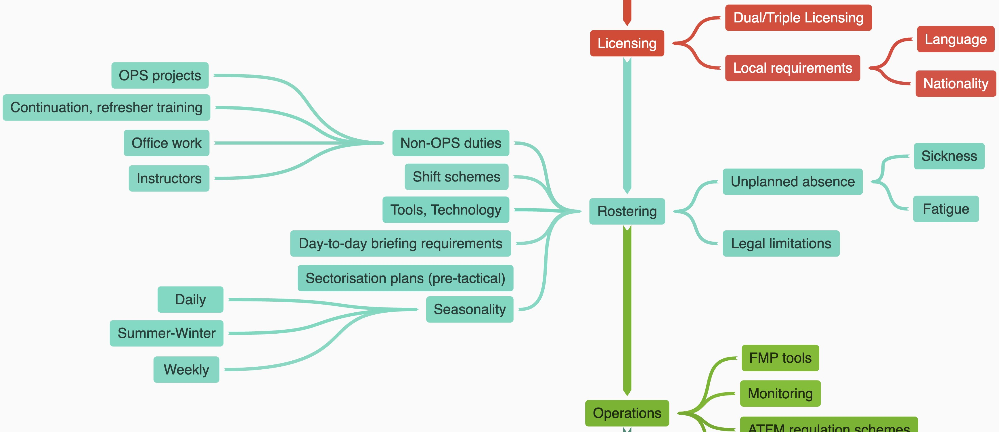
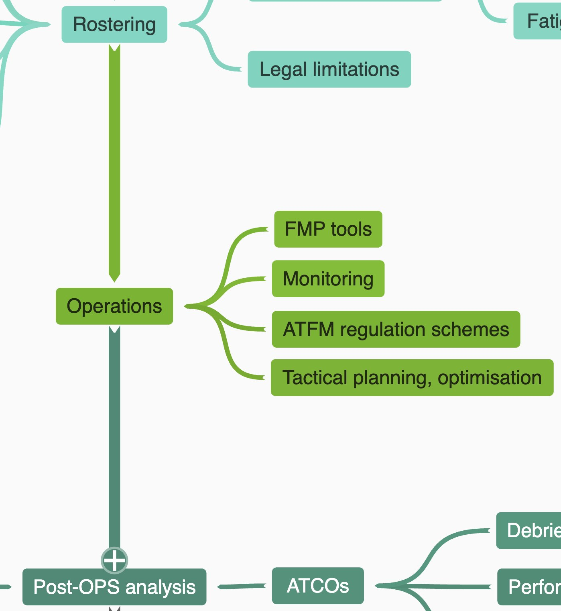

Deployment and operational work
Rostering and operational practices translate the qualified workforce into capacity. Their effectiveness depends on working arrangements, sector configurations and the tools available.
Rostering and operational deployment

Once controllers are operational, rostering and day-to-day operations become central to the system's efficiency and reliability. Shift schemes, seasonal traffic variations, sector-opening plans, and daily capacity decisions translate strategic and training assumptions into real service delivery. At this stage, the system’s ability to meet traffic demand depends on how well rostering aligns available competencies with expected operational needs, while remaining robust to variability and uncertainty.
The European ATM Master Plan indicates that capacity delivery increasingly depends on the alignment of airspace design, operational concepts, and human resource planning, rather than on isolated local optimisation. This reinforces the need for rostering practices that reflect the key principles agreed within the airspace strategy, both within individual ANSPs and between cooperating ANSPs.
Rostering should therefore not be treated as a purely administrative or short-term optimisation task. SESAR performance-based ATM concepts highlight that operational planning and human resource deployment need to be consistent with overall system design assumptions, including capacity distribution, flexibility, and cross-border coordination. When rostering reflects these shared principles, operational plans become more predictable and stable, reducing last-minute adjustments and improving overall efficiency.
SESAR human performance guidance shows that traffic-driven efficiency must be balanced with human factors considerations. As reflected in the European ATM Master Plan 2025, aspects such as workload management, fatigue, adequate recovery time, and long-term well-being are essential for maintaining safe and resilient operations. Overemphasis on short-term capacity gains without considering human performance limitations can undermine operational stability and reduce overall system resilience over time.
Operational variability-such as traffic fluctuations, weather impacts, or short-notice constraints-is an inherent characteristic of air traffic management and is reflected in SESAR work on dynamic and flexible operations. These concepts highlight the need for operational systems to absorb variability while maintaining stability and performance. In this context, rostering needs to ensure sufficient competence coverage and controlled flexibility, enabling adjustments without placing excessive strain on personnel.
In coordinated or cross-border environments, SESAR interoperability material shows that operational decisions are increasingly interconnected across organisational boundaries. As described in SESAR Solution PJ.10-W2-93, the performance of one part of the system can directly influence neighbouring areas. Misalignment among ANSPs may therefore introduce constraints that propagate across the network, reducing overall performance. Consistent application of shared strategic principles, supported by effective coordination mechanisms, helps ensure that local optimisation does not undermine wider network objectives.
Parameters of the rostering scheme are often subject to constraints defined in CBAs and, in some cases, even to national legislation (as in France and Spain). These constraints can limit or define shift length, daily, monthly or yearly duty times for ATCOs, the number of rest days between shifts, etc.
While the majority of ATCO duties are operational, ATCOs are also required to perform other duties, such as participation in ATM system developments, continuation and refresher training, office work, and, as we already noted under the sections on training, serving as instructors. These duties must be planned and factored into the rostering plans in advance, so that daily rosters can be optimised.
Daily, weekly, and yearly seasonal variations in traffic demand are key inputs for sectorisation and may require greater flexibility across the whole system. Sectorisation plans, overtime arrangements, holidays, and even unplanned leave or the absence of ATCOs are all factors that must be considered in rostering if ANSPs want to avoid staff shortages during the day of operations.
The differences in these parameters and in rostering schemes in general are significant across European ANSPs, demonstrating that the European regulatory framework offers room for interpretation and flexibility. We understand that there is great potential for efficiency gains from optimising rostering schemes, including human factors. This potential will need to be explored further to address staff shortages.
Operational delivery feeds directly into tactical planning and flow management, where pre-tactical assumptions are tested against real-time conditions. Sector opening plans, demand–capacity balancing measures and the use of decision-support tools all interact at this stage, translating planned capacity into actual traffic handling. The effectiveness of these interactions becomes evident in key operational outcomes, such as throughput, delay absorption, and workload stability, providing a clear picture of how well the system performs under varying conditions.
In cross-border and cooperative airspace environments, the role of the Flow Management Position (FMP) becomes particularly critical. FMP procedures are no longer confined to managing demand within a single national context; they must now support coordinated decision-making across adjacent or shared airspaces. To achieve this, FMP functions should be operationally aligned and, where appropriate, combined across the participating ANSPs. Such arrangements enable a shared, real-time understanding of traffic evolution, capacity constraints and operational priorities, reducing fragmentation and improving predictability at the network level.
Effective cross-border flow management also requires that FMP personnel in each State have a detailed, practical understanding of neighbouring airspace. This includes knowledge of airspace structures, sectorisation principles, capacity assumptions, local constraints and typical operational responses. Without this shared situational awareness, tactical decisions risk being sub-optimal or generating unintended effects beyond national boundaries. Close coordination between FMPs ensures that measures taken in one airspace are compatible with the conditions and objectives of adjacent airspace, supporting smoother traffic flow across the network.

These requirements have direct implications for training. Well-designed and targeted training for FMP personnel is essential to support cross-border operations. Training must go beyond local procedures and include exposure to neighbouring airspace concepts, joint scenarios and coordinated decision-making processes. Scenario-based and simulation-supported training can help develop common mental models, improve anticipation of network effects and build trust between organisations. Without such preparation, even well-defined procedures may not deliver the intended benefits in real-time operations.
Monitoring and performance measurement close the loop at this stage. By analysing operational outcomes-such as delays, sector utilisation, and workload trends-ANSPs can assess how effectively tactical planning and flow management processes support agreed capacity and network objectives. In cross-border environments, shared performance monitoring is particularly valuable, as it allows partners to identify systemic issues, evaluate the effectiveness of coordinated FMP actions and refine procedures and training accordingly. In this way, tactical planning, flow management and performance monitoring together form a critical link between strategic intent and day-to-day operational reality in dynamic, network-oriented ATM environments.
Operational challenges and measures
Rostering encompasses the processes through which available controllers are allocated to operational duties while complying with applicable safety, fatigue-management and competency requirements. It includes shift design, workforce scheduling and the allocation of operational resources across different periods of demand. As the link between workforce availability and day-to-day service provision, Rostering plays an important role in determining how effectively existing ATCO capacity can be utilised.
Rostering received Medium Incidence and Medium Severity classifications. Stakeholders identified its contribution to operational flexibility, workforce utilisation and resilience.
The consultation process revealed broad agreement among ANSPs regarding the importance of maximising the effective use of available controllers while maintaining compliance with operational and fatigue-related requirements. Stakeholders also recognised that increasing controller availability alone does not necessarily translate into additional operational capacity if roster arrangements do not allow resources to be deployed efficiently.
At the same time, significant differences were observed in rostering approaches across the network. Variations in working-time limitations, overtime arrangements, collective agreements, rostering tools and fatigue-management practices result in differing levels of operational flexibility and workforce utilisation across ANSPs.
The challenges identified within Rostering primarily concern the ability of ANSPs to translate available workforce resources into operational capacity. Stakeholders frequently highlighted that rostering constraints can limit the effective utilisation of controllers even when sufficient workforce numbers are available. Several challenges also reflect the increasing complexity of roster management as ANSPs seek to balance operational demand, workforce wellbeing and regulatory requirements.
Challenges reported in Rostering (Source: Consortium assessment)
| ID | Challenge | Rationale | ANSPs reporting |
|---|---|---|---|
| O-R.1 | Variability in operational-hour limitations across the network | National regulations, collective agreements and local arrangements establish different limits on operational hours, creating significant differences in workforce flexibility between ANSPs. | 7 (42%) |
| O-R.2 | Dependence on voluntary overtime | Operational schedules in some units rely heavily on voluntary overtime to meet staffing requirements. As a result, day-to-day operations may become dependent on workforce participation beyond normal rostered hours. | 4 (24%) |
| O-R.3 | Limited objective assessment of fatigue | Fatigue management often relies on subjective reporting mechanisms rather than objective indicators, making it difficult to incorporate fatigue consistently into workforce planning and scheduling decisions. | 4 (24%) |
| O-R.4 | Limited optimisation of rostering processes | Manual or spreadsheet-based rostering approaches may struggle to incorporate all operational, regulatory and workforce constraints simultaneously, limiting the ability to optimise workforce deployment. | 3 (18%) |
| O-R.5 | Operational vulnerability to overtime withdrawal | Where overtime becomes an integral component of workforce planning, collective reductions in overtime participation may have a significant impact on operational capacity and service delivery. | 2 (12%) |
The challenges identified within Rostering demonstrate that workforce availability and workforce utilisation are not necessarily equivalent. Several stakeholders reported that roster arrangements, working-time limitations and scheduling practices can restrict the amount of operational capacity that can be generated from the available workforce.
The most frequently reported challenges relate to the dependence of some operational environments on voluntary overtime and the limitations of current rostering processes. A number of ANSPs highlighted that operational capacity can become heavily reliant on workforce willingness to work beyond rostered hours, creating vulnerabilities when overtime participation decreases. At the same time, stakeholders reported that increasingly complex rostering requirements can be difficult to manage through traditional scheduling approaches, reducing opportunities for optimisation.
The consultation also revealed broader concerns regarding workforce flexibility and fatigue management. Differences in operational-hour limitations and the absence of objective fatigue indicators may restrict the ability of ANSPs to utilise workforce resources consistently and efficiently. Although these challenges do not directly affect the number of controllers available, they influence the extent to which existing workforce capacity can be converted into operational output.
Taken together, the findings suggest that rostering plays an important role in determining the effective utilisation of the workforce and therefore constitutes a relevant component of the broader ATCO availability challenge.
The identified solutions focus on improving workforce utilisation, increasing the flexibility of roster arrangements and reducing operational dependence on overtime. Most measures seek to ensure that available workforce resources are deployed as efficiently as possible whilst maintaining compliance with safety and fatigue-management requirements.
Main solutions for Rostering (Source: Consortium assessment)
| ID | Solution | Challenges addressed | Time horizon | Control over the solution | Model variables affected |
|---|---|---|---|---|---|
| O-R.BP.1 | Implement dedicated rostering optimisation tools | O-R.4 | Short | Internal | Utilisation |
| O-R.BP.2 | Adopt shorter-term dynamic rostering approaches | N/A | Short | Internal | Utilisation |
| O-R.BP.3 | Reduce structural dependence on overtime through roster redesign | O-R.1 O-R.2 O-R.5 | Short | Internal + External | Utilisation |
| O-R.BP.4 | Integrate workload and complexity indicators into rostering decisions | O-R.3 O-R.4 | Short | Internal | Utilisation |
| O-R.FP.1 | Introduce greater flexibility in competence-maintenance planning | O-R.2 | Medium | Internal + External | Utilisation |
| O-R.FP.2 | Deploy AI-supported workload monitoring and roster optimisation tools | O-R.3 O-R.4 | Medium | Internal + Technology | Utilisation ATCO productivity |
The identified solutions focus on improving the efficiency and resilience of workforce deployment rather than increasing the size of the workforce itself. Accordingly, most measures influence Utilisation, while a smaller number also affect ATCO Productivity by improving the allocation of controllers to operational tasks.
Several best practices seek to improve the quality of rostering decisions through better planning tools and greater responsiveness to changing operational conditions. Dedicated rostering software, dynamic scheduling approaches and the incorporation of workload indicators into scheduling decisions all seek to improve the alignment between workforce availability and operational demand. These measures directly address concerns regarding the limited ability of manual rostering approaches to optimise increasingly complex operational environments.
A second group of measures focuses on reducing dependence on voluntary overtime. Stakeholders highlighted the importance of roster arrangements that can deliver operational requirements without relying excessively on additional workforce participation. Measures aimed at redesigning roster structures and improving workforce flexibility seek to improve operational resilience whilst maintaining compliance with fatigue-management requirements.
The future practices build on these principles through the use of more advanced analytical and technological capabilities. Flexible competence-maintenance arrangements and AI-supported workload management tools have the potential to improve both utilisation and productivity by enabling workforce resources to be allocated more dynamically and efficiently. Together, these measures seek to maximise the operational capacity that can be generated from the available workforce.
Operations encompass the day-to-day delivery of air traffic services once controllers are fully qualified and operational. It includes the procedures, technologies, operational concepts and organisational arrangements through which available workforce resources are translated into airspace capacity and service provision. As a result, this key area plays a central role in determining ATCO productivity and the amount of traffic that can be safely managed by the existing workforce.
Operations received Medium Incidence and High Severity classifications. Operational constraints were experienced by a large share of participating ANSPs.
The consultation process revealed broad agreement among ANSPs regarding the importance of productivity improvements and technological development in addressing future capacity challenges. Stakeholders consistently highlighted that increasing controller numbers alone is unlikely to be sufficient to meet long-term demand, particularly given the time required to introduce new operational personnel. Most ANSPs therefore recognised that future workforce availability will depend not only on increasing supply but also on improving the productivity of the operational environment.
At the same time, differences emerged regarding the pace at which technological and operational changes are expected to materialise. While some ANSPs expressed confidence in the potential of automation and new ATM concepts to improve capacity, others highlighted uncertainties regarding deployment timelines, workforce implications and the competencies that future controllers will be expected to develop.
The challenges identified within Operations primarily concern the gap between the potential benefits associated with technological developments and the current reality of operational service provision. Stakeholders repeatedly highlighted that many of the concepts expected to increase capacity and productivity remain under development, are implemented unevenly across the network or have not yet delivered their anticipated benefits.
Challenges reported in Operations (Source: Consortium assessment)
| ID | Challenge | Rationale | ANSPs reporting |
|---|---|---|---|
| O-O.1 | Operational complexity associated with military activity | Military airspace use and related coordination requirements can increase operational complexity and reduce available capacity for civil traffic, placing additional demands on operational resources. | 8 (47%) |
| O-O.2 | Limited deployment of operational automation tools | Technologies capable of improving productivity and reducing controller workload are available in many cases but have not yet been fully deployed or integrated into day-to-day operational environments. | 8 (47%) |
| O-O.3 | Technological implementation lagging behind traffic growth | The pace of technological deployment may be insufficient to offset expected traffic growth, creating a risk that operational demand increases faster than productivity improvements can be realised. | 7 (41%) |
| O-O.4 | Uncertainty regarding the future role of controllers | The evolving relationship between automation and controller responsibilities creates uncertainty regarding the competencies, training requirements and operational functions that will be required in future environments. | 6 (35%) |
The challenges identified within Operations differ from those observed in earlier stages of the ATCO management cycle. Whereas Recruitment, Selection and Training primarily influence the production of future controllers, operational challenges affect the amount of capacity that can be generated from the workforce already available.
The most frequently reported concerns relate to technology and productivity. Stakeholders consistently recognised the potential of automation and advanced operational concepts to increase capacity, reduce workload and improve productivity. However, many ANSPs also highlighted that these benefits have not yet been fully realised due to limitations in deployment, implementation timelines and organisational readiness. As a result, ANSPs continue to rely heavily on workforce growth to accommodate increasing traffic volumes despite widespread expectations that future ATM concepts will enhance productivity.
The consultation also revealed significant uncertainty regarding the future operational environment. While stakeholders broadly agree that automation will play an increasingly important role, opinions differ regarding its impact on workforce requirements and operational responsibilities. This uncertainty complicates decisions relating to training, workforce planning and investment priorities.
Taken together, the findings suggest that Operations constitutes a key area not because it influences the number of available controllers, but because it determines the productivity and effectiveness of the workforce that already exists. Consequently, improvements in this area have the potential to contribute significantly to reducing future workforce pressures.
The identified solutions focus on increasing operational productivity through the deployment of new technologies, the introduction of advanced operational concepts and the development of the competencies required to support increasingly automated environments. Most measures seek to improve the amount of capacity that can be delivered by the existing workforce rather than increasing workforce numbers directly.
Main solutions for Operations (Source: Consortium assessment)
| ID | Solution | Challenges addressed | Time horizon | Control over the solution | Model variables affected |
|---|---|---|---|---|---|
| O-O.BP.1 | Evaluate automation benefits through simulation-based deployment programmes | O-O.2 | Medium | Internal + Technology | ATCO productivity |
| O-O.BP.2 | Integrate emerging operational concepts into training programmes | O-O.3 O-O.4 | Medium | Internal | Training duration |
| O-O.BP.3 | Expand the use of advanced conflict detection and decision-support tools | O-O.2 | Medium | Internal + Technology | ATCO productivity |
| O-O.BP.4 | Promote standardisation of operational procedures and sector design | O-O.1 | Medium | Internal + External | Training duration Utilisation |
| O-O.BP.5 | Develop competencies for automation-enabled operational environments | O-O.2 O-O.4 | Medium | Internal | ATCO productivity |
| O-O.FP.1 | Increase automation of workload-intensive operational tasks | O-O.2 O-O.3 | Long | Internal + External + Technology | ATCO productivity |
| O-O.FP.2 | Expand implementation of advanced airspace management concepts | O-O.1 O-O.3 | Long | Internal + External | ATCO productivity |
| O-O.FP.3 | Develop virtual service provision and virtual mobility capabilities | O-O.1 O-O.3 | Long | Internal + External + Technology | Utilisation |
The identified solutions recognise that future workforce challenges cannot be addressed solely through increases in controller numbers. Accordingly, most measures influence ATCO Productivity, while a smaller number also affect Utilisation and Training duration by improving the way operational activities are organised and supported.
Several best practices focus on accelerating the deployment and adoption of operational technologies already available within the sector. Simulation-based deployment programmes, advanced conflict-detection tools and greater standardisation of operational procedures seek to increase the productivity of controllers while maintaining safety and operational performance. These measures directly address concerns regarding the slow implementation of technologies capable of delivering capacity improvements.
A second group of measures focuses on preparing the workforce for future operational environments. The integration of emerging operational concepts into training programmes and the development of competencies related to automation, resilience and human-machine interaction seek to ensure that controllers can effectively operate within increasingly technology-enabled systems. These measures address the uncertainty identified by stakeholders regarding the future role of controllers and the skills that will be required.
The future practices build on these principles by envisaging more transformative changes to the operational environment. Increased automation of workload-intensive tasks, advanced airspace-management concepts and virtual service provision models have the potential to generate significant productivity gains while increasing the flexibility of workforce deployment. Although many of these measures remain dependent on wider technological and regulatory developments, stakeholders generally viewed them as important enablers of long-term capacity growth.
Taken together, the identified solutions suggest that Operations represents one of the principal opportunities for addressing future workforce pressures from the demand side of the supply-demand model. By increasing productivity and improving workforce utilisation, operational improvements may reduce the number of controllers required to accommodate future traffic growth.